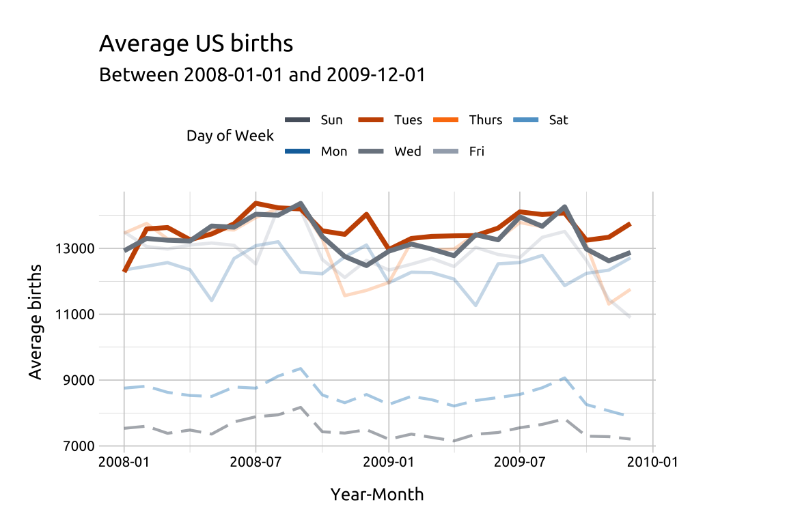

Grouped line graphs
Description
Grouped line graphs use color, line style, and faceting to show group changes over time for a continuous variable across categorical levels.
Getting set up

PACKAGES:
Install packages.
Code
install.packages("fivethirtyeight")
library(fivethirtyeight)
library(ggplot2)DATA:
We’ll be using the US_births_1994_2003 and US_births_2000_2014 datasets from the fivethirtyeight package:
Binding these together (they have identical columns)
Create a
day_categoryvariable that distinguishes between weekdays (Weekends) and weekends (Weekday)Use
yearandmonthto createyr_mnthUse
yearandquarterto createyr_qtr
Save these changes to usbirth_1994_2014:
Code
US_births_2004_2014 <- filter(fivethirtyeight::US_births_2000_2014, year > 2003)
usbirth_1994_2014 <- US_births_2004_2014 |>
dplyr::bind_rows(fivethirtyeight::US_births_1994_2003) |>
dplyr::mutate(
day_category = case_when(
day_of_week %in% c("Sun", "Sat") ~ "Weekend",
day_of_week %nin% c("Sun", "Sat") ~ "Weekday",
TRUE ~ NA_character_
),
month = dplyr::if_else(
condition = month < 10,
true = paste0("0", month),
false = as.character(month)
),
yr_mnth = paste0(year, "-", month),
yr_mnth = lubridate::ym(yr_mnth),
yr_qtr = paste0(lubridate::year(date),
"/0",
quarter(date)),
yr_qtr = factor(yr_qtr, ordered = TRUE)
)
dplyr::glimpse(usbirth_1994_2014)
#> Rows: 7,670
#> Columns: 9
#> $ year <int> 2004, 2004, 2004, 2004, 2004, 2004, …
#> $ month <chr> "01", "01", "01", "01", "01", "01", …
#> $ date_of_month <int> 1, 2, 3, 4, 5, 6, 7, 8, 9, 10, 11, 1…
#> $ date <date> 2004-01-01, 2004-01-02, 2004-01-03,…
#> $ day_of_week <ord> Thurs, Fri, Sat, Sun, Mon, Tues, Wed…
#> $ births <int> 8205, 10586, 8337, 7359, 11489, 1275…
#> $ day_category <chr> "Weekday", "Weekday", "Weekend", "We…
#> $ yr_mnth <date> 2004-01-01, 2004-01-01, 2004-01-01,…
#> $ yr_qtr <ord> 2004/01, 2004/01, 2004/01, 2004/01, …We’ll use these data in the More info section for more line graphs, but for now:
Group
usbirth_1994_2014onyearandday_categoryCalculate the average
birthsasavg_births
Store the data in avg_birth_day_cat_yr:
Code
avg_birth_day_cat_yr <- usbirth_1994_2014 |>
dplyr::group_by(year, day_category) |>
dplyr::summarise(avg_births = mean(births, na.rm = TRUE)) |>
dplyr::ungroup()
#> `summarise()` has grouped output by 'year'. You can
#> override using the `.groups` argument.
dplyr::glimpse(avg_birth_day_cat_yr)
#> Rows: 42
#> Columns: 3
#> $ year <int> 1994, 1994, 1995, 1995, 1996, 1996, 1…
#> $ day_category <chr> "Weekday", "Weekend", "Weekday", "Wee…
#> $ avg_births <dbl> 11728.012, 8604.610, 11593.150, 8432.…The grammar
CODE:
Create labels with labs()
Map yr_mnth to the x, avg_births to the y, and day_category to group
Add the geom_line() layer and map day_category to color (inside aes())
Code
labs_line_graph <- labs(title = "Average US births",
subtitle = "1994-2014",
y = "Average number of US births",
x = "Year",
color = "Day Category")
ggp2_line <- ggplot(data = avg_birth_day_cat_yr,
mapping = aes(x = year,
y = avg_births,
group = day_category)) +
geom_line(aes(color = day_category))
ggp2_line +
labs_line_graphGRAPH:
More info
Line graphs are great for displaying relationships across variables with multiple groups (or levels). We can also use facets for multiple comparisons (i.e., small multiples).
DATA:
In the previous graph, we can see the number of births begins to decline around 2007 or 2008. We’ll create another summarized dataset from the usbirth_2010_2014 data, but this time we restrict the observations to only births in between 2008 and 2009, group on yr_qtr and day_of_week, and get the average number of births (as avg_births).
Code
avg_births_dow_qtr <- usbirth_1994_2014 |>
dplyr::filter(year >= 2008 & year <= 2009) |>
dplyr::group_by(yr_qtr, day_of_week) |>
dplyr::summarise(avg_births = mean(births, na.rm = TRUE)) |>
dplyr::ungroup()
dplyr::glimpse(avg_births_dow_qtr)
#> Rows: 56
#> Columns: 3
#> $ yr_qtr <ord> 2008/01, 2008/01, 2008/01, 2008/01, 20…
#> $ day_of_week <ord> Sun, Mon, Tues, Wed, Thurs, Fri, Sat, …
#> $ avg_births <dbl> 7497.231, 12464.385, 13099.692, 13139.…GROUPS:
Now when we create our line graph, we will have a categorical variable with seven levels (day_of_week):
- Create subtitle using
paste0()to ensure it’s accurate if/when the underlying data is updated.
- move the legend to the top of the graph using
theme(legend.position = "top")(to improve readability).
# here we create the labels (with the subtitle updating with the data)
labs_line_graph_grp <- labs(title = "Average US births",
subtitle = paste0("Between ",
min(avg_births_dow_qtr$yr_qtr),
" and ",
max(avg_births_dow_qtr$yr_qtr)),
y = "Average births",
x = "Year/Quarter",
color = "Day of Week")# Build layer with yr_qtr and day_of_week
ggp2_line_grp <- ggplot(data = avg_births_dow_qtr,
mapping = aes(x = yr_qtr,
y = avg_births,
group = day_of_week)) +
geom_line(aes(color = day_of_week))
# move legend
ggp2_line_grp +
labs_line_graph_grp +
theme(legend.position = "top")We can make it easier to distinguish between lines in our graph by adjusting the line style (linetype and linewidth), or by changing overall opacity (alpha).
We’ll work through some examples below using another subset from usbirth_1994_2014.
DATA:
avg_births_dow_mnth <- usbirth_1994_2014 |>
dplyr::filter(year >= 2008 & year < 2010) |>
dplyr::group_by(yr_mnth, day_of_week) |>
dplyr::summarise(avg_births = mean(births, na.rm = TRUE)) |>
dplyr::ungroup()
dplyr::glimpse(avg_births_dow_mnth)
#> Rows: 168
#> Columns: 3
#> $ yr_mnth <date> 2008-01-01, 2008-01-01, 2008-01-01, 2…
#> $ day_of_week <ord> Sun, Mon, Tues, Wed, Thurs, Fri, Sat, …
#> $ avg_births <dbl> 7535.25, 12344.00, 12280.60, 12925.00,…labs_line_styles <- labs(
title = "Average US births",
subtitle = paste0(
"Between ",
min(avg_births_dow_mnth$yr_mnth),
" and ",
max(avg_births_dow_mnth$yr_mnth)
),
y = "Average births",
x = "Year-Month",
color = "Day of Week"
)alpha & linewidth:
Color palettes are a excellent too for highlighting or emphasizing certain lines over others.
We’ll start by creating a line graph layer for Monday ("Mon"), Thursday ("Thurs"), and Friday ("Fri") adjusting the opacity with alpha.
ggp2_line_mon_thur_fri <-
ggplot(data = dplyr::filter(avg_births_dow_mnth,
day_of_week %in% c("Mon", "Thurs", "Fri"))) +
geom_line(
aes(x = yr_mnth,
y = avg_births,
group = day_of_week,
color = day_of_week),
alpha = 1 / 4,
linewidth = 0.85)
# layer 1
ggp2_line_mon_thur_fri +
labs_line_styles +
theme(legend.position = "top")linetype:
Then we’ll change the linetype of Saturday and Sunday to "longdash' (and make this somewhat transparent with a slightly higher alpha).
ggp2_line_sat_sun <- ggp2_line_mon_thur_fri +
geom_line(data = dplyr::filter(avg_births_dow_mnth,
day_of_week %in% c("Sat", "Sun")),
aes(x = yr_mnth,
y = avg_births,
group = day_of_week,
color = day_of_week),
alpha = 1 / 2,
linewidth = 0.75,
linetype = "longdash")
# layers 1 & 2
ggp2_line_sat_sun +
labs_line_styles +
theme(legend.position = "top")Color palettes:
Add geom_line() for Wednesday and Tuesday, but change the color pallete with paletteer and ggthemes.
We also manually set the legend order by supplying the original factor levels to the breaks argument.
library(paletteer)
library(ggthemes)
# original factor levels
lev_order <- levels(avg_births_dow_mnth$day_of_week)
# layer 3
ggp2_line_pal_d <- ggp2_line_sat_sun +
# add line
geom_line(data = dplyr::filter(avg_births_dow_mnth,
day_of_week %in% c("Wed", "Tues")),
aes(x = yr_mnth,
y = avg_births,
group = day_of_week,
color = day_of_week),
linewidth = 1.25) +
# add palette
ggplot2::scale_color_manual(
breaks = lev_order,
# original factor levels
values = paletteer::paletteer_d(palette = "ggthemes::Color_Blind",
n = 7))
# three layers
ggp2_line_pal_d +
# labels
labs_line_styles +
# legend position
theme(legend.position = "top")
Changing the look of the lines is a great way to highlight or emphasize some lines over others.
LABELS:
In the previous graph, we can see the number of average births reaches it’s peak in 2008 or 2009, so we’ll use labels to display the max births and max average births.
To accomplish this, we’re going to create two small tables of labels, label_max_dow and label_max_avg_dow, that we’ll use to label the maximum values.
They will each have 7 rows (one for each day of the week) and a label variable (lbl) which we can use with geom_label().
label_max_dow <- usbirth_1994_2014 |>
dplyr::group_by(day_of_week) |>
dplyr::summarise(max_births = max(births, na.rm = TRUE)) |>
dplyr::ungroup() |>
dplyr::arrange(desc(max_births)) |>
dplyr::inner_join(y = usbirth_1994_2014,
by = c("max_births" = "births", "day_of_week")) |>
dplyr::mutate(lbl = paste0(day_of_week,
" (",
date,
" )",
", max births = ",
max_births)) |>
dplyr::select(day_of_week, yr_mnth, max_births, lbl)
dplyr::arrange(label_max_dow, desc(max_births)) |>
dplyr::slice(1:2)label_max_avg_dow <- avg_births_dow_mnth |>
# group by mon-sun
dplyr::group_by(day_of_week) |>
# get max avg
dplyr::summarise(max_avg_births = max(avg_births, na.rm = TRUE)) |>
# ungroup
dplyr::ungroup() |>
# join back to table
dplyr::inner_join(y = avg_births_dow_mnth,
by = "day_of_week") |>
# check for max
dplyr::mutate(is_max = case_when(
avg_births == max_avg_births ~ TRUE,
avg_births != max_avg_births ~ FALSE,
)) |>
# remove non-maxes
filter(is_max == TRUE) |>
dplyr::mutate(lbl = paste0(day_of_week,
": Max avg births = ",
max_avg_births)) |>
# reduce
select(day_of_week, yr_mnth, max_avg_births, lbl)
dplyr::arrange(label_max_avg_dow, desc(max_avg_births)) |>
dplyr::slice(1:2)Now that we have label tables for each metric, we can filter them to the days we want to label.
We’ll use filter() to get the maximum values for "Wed" (in label_max_wed_dow and label_max_avg_wed_dow):
# get wed
label_max_wed_dow <- label_max_dow |>
filter(day_of_week == "Wed")
label_max_wed_dow
label_max_avg_wed_dow <- label_max_avg_dow |>
filter(day_of_week == "Wed")
label_max_avg_wed_dowAdd geom_point() and geom_label() for Wednesday.
# point for max births/day
ggp2_line_wed_max_births_pnts <- geom_point(
data = label_max_wed_dow,
aes(x = yr_mnth,
y = max_births,
color = day_of_week),
size = 2.5,
show.legend = FALSE)
ggp2_line_wed_max_avg_births_pnts <-
geom_point(
data = label_max_avg_wed_dow,
aes(x = yr_mnth,
y = max_avg_births,
color = day_of_week),
size = 2.5,
alpha = 1/2,
show.legend = FALSE)
ggp2_line_wed_max_births_lbl <- geom_label(
data = label_max_wed_dow,
aes(x = yr_mnth,
y = max_births,
label = lbl,
color = day_of_week),
fill = "#ffffff",
nudge_y = -480,
nudge_x = 25,
size = 1.3,
show.legend = FALSE)
ggp2_line_wed_max_avg_births_lbl <-
geom_label(data = label_max_avg_wed_dow,
aes(x = yr_mnth,
y = max_avg_births,
label = lbl,
color = day_of_week),
fill = "#ffffff",
nudge_y = 145,
nudge_x = 85,
size = 1.3,
show.legend = FALSE)
ggp2_line_pal_d +
ggp2_line_wed_max_births_pnts +
ggp2_line_wed_max_avg_births_pnts +
ggp2_line_wed_max_births_lbl +
ggp2_line_wed_max_avg_births_lbl +
# add labels
labs_line_styles +
# move legend to top
theme(legend.position = "top")We’ll use filter() to get the maximum values for "Tues" (in label_max_tues_dow and label_max_avg_tues_dow):
# point for max births/day
# get tues
label_max_tues_dow <- label_max_dow |>
filter(day_of_week == "Tues")
label_max_tues_dow
label_max_avg_tues_dow <- label_max_avg_dow |>
filter(day_of_week == "Tues")
label_max_avg_tues_dowAdd geom_point() and geom_label() for Tuesday.
# point for max births/day
ggp2_line_tues_max_births_pnts <-
geom_point(data = label_max_tues_dow,
aes(x = yr_mnth,
y = max_births,
color = day_of_week),
size = 2.5,
show.legend = FALSE)
ggp2_line_tues_max_avg_births_pnts <-
geom_point(
data = label_max_avg_tues_dow,
aes(x = yr_mnth,
y = max_avg_births,
color = day_of_week),
size = 2.5,
alpha = 1/2,
show.legend = FALSE)
ggp2_line_tues_max_births_lbl <-
geom_label(data = label_max_tues_dow,
aes(x = yr_mnth,
y = max_births,
label = lbl,
color = day_of_week),
fill = "#ffffff",
nudge_y = -480,
nudge_x = 50,
size = 1.3,
show.legend = FALSE)
ggp2_line_tues_max_avg_births_lbl <-
geom_label(data = label_max_avg_tues_dow,
aes(x = yr_mnth,
y = max_avg_births,
label = lbl,
color = day_of_week),
fill = "#ffffff",
nudge_y = 300,
nudge_x = -80,
size = 1.3,
show.legend = FALSE)
ggp2_line_pal_d +
# wednesday layers
ggp2_line_wed_max_births_pnts +
ggp2_line_wed_max_avg_births_pnts +
ggp2_line_wed_max_births_lbl +
ggp2_line_wed_max_avg_births_lbl +
# tuesday layers
ggp2_line_tues_max_births_pnts +
ggp2_line_tues_max_avg_births_pnts +
ggp2_line_tues_max_births_lbl +
ggp2_line_tues_max_avg_births_lbl +
# add labels
labs_line_styles +
# move legend to top
theme(legend.position = "top")DATA:
Finally, we can use facets to view each of the line graphs seperately (or small multiples).
We’ll create a dataset with the dates limited to births between 2008-07-01 and 2010-01-01, and calculate the median births, grouped by date, day_category, and day_of_week and store it as med_births_dcat_dow_mnth.
med_births_dcat_dow_mnth <- usbirth_1994_2014 |>
dplyr::filter(date >= lubridate::as_date("2008-07-01") &
date < lubridate::as_date("2010-01-01")) |>
dplyr::group_by(date, day_category, day_of_week) |>
dplyr::summarise(med_births = median(births, na.rm = TRUE)) |>
dplyr::ungroup()
dplyr::glimpse(med_births_dcat_dow_mnth)
#> Rows: 549
#> Columns: 4
#> $ date <date> 2008-07-01, 2008-07-02, 2008-07-03, …
#> $ day_category <chr> "Weekday", "Weekday", "Weekday", "Wee…
#> $ day_of_week <ord> Tues, Wed, Thurs, Fri, Sat, Sun, Mon,…
#> $ med_births <int> 14350, 14189, 14182, 9449, 8061, 7725…FACETS:
Using facet_wrap() with a single categorical variable (. ~ var) will create a plot for each discrete level, while facet_grid() will create a level-by-level grid (specified as var ~ var).
# labels
labs_line_graph_facet_wrap <- labs(
title = "Median US births",
subtitle = paste0(
"Between ",
min(med_births_dcat_dow_mnth$date),
" and ",
max(med_births_dcat_dow_mnth$date)
),
y = "Median births",
x = "Date",
color = "Day of Week"
)
# layer
ggp2_line_facet_wrap <- ggplot(data = med_births_dcat_dow_mnth,
mapping = aes(x = date,
y = med_births,
group = day_of_week)) +
geom_line(aes(color = day_of_week)) +
scale_color_manual(values = c(
"#30123B", "#4485F6", "#1AE4B6",
"#A1FB3E", "#FABA39", "#E3460B", "#7A0403"
)) +
scale_y_continuous(
breaks = c(4000, 8000, 12000, 16000),
labels = c('4000', '8000', '12000', '16000')
) +
scale_x_date(date_breaks = "1 year",
date_labels = c("2008", "2009", "2010")) +
facet_wrap(day_of_week ~ ., shrink = TRUE)
ggp2_line_facet_wrap +
labs_line_graph_facet_wrap +
theme(legend.position = "top")It’s always a good idea to check the x and y axis text when using facets. I’ve adjusted the x and y axes above using scale_y_continuous() and scale_x_date() before adding facet_wrap()
# labels
labs_line_graph_facet_grid <- labs(
title = "Median US births",
subtitle = paste0(
"Between ",
min(med_births_dcat_dow_mnth$date),
" and ",
max(med_births_dcat_dow_mnth$date)
),
y = "Median births",
x = "Date",
color = "Day of Week"
)
# layer
ggp2_line_facet_grid <- ggplot(data = med_births_dcat_dow_mnth,
mapping = aes(x = date,
y = med_births,
group = day_of_week)) +
geom_line(aes(color = day_of_week)) +
scale_color_manual(values = c(
"#30123B", "#4485F6", "#1AE4B6",
"#A1FB3E", "#FABA39", "#E3460B", "#7A0403"
)) +
scale_y_continuous(
breaks = c(4000, 8000, 12000, 16000),
labels = c('4000', '8000', '12000', '16000')
) +
scale_x_date(date_breaks = "1 year",
date_labels = c("2008", "2009", "2010")) +
facet_grid(day_of_week ~ day_category,
shrink = TRUE)
ggp2_line_facet_grid +
labs_line_graph_facet_gridThe colors have been manually, using scale_color_manual() and passing seven color hex codes to the values argument.